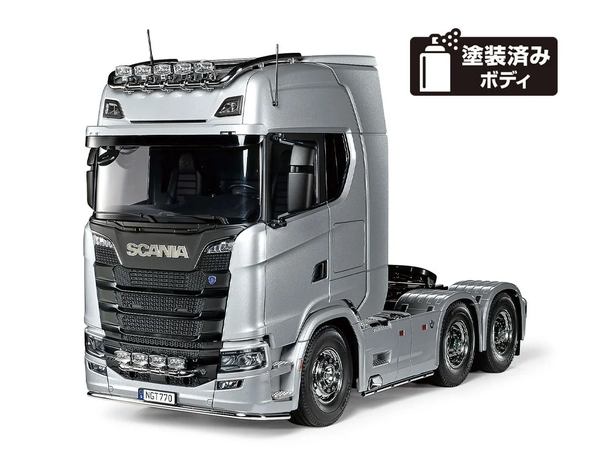

タミヤ スカニア 770 S 6x4 (シルバーエディション)

引用元画像：タミヤ公式サイト
📋 基本情報
| メーカー | タミヤ（Tamiya） |
|---|---|
| 機種名 | 1/14RC スカニア 770 S 6x4 (シルバーエディション) フルオペレーションセット |
| 型番 | 56373（シルバーエディション） |
| 発売時期 | 2023年12月9日 |
| 希望小売価格 | 121,000円（本体価格110,000円） |
| 生産状況 | 現行販売中 |
| カテゴリー | 電動RCビッグトラックシリーズ（1/14スケール） |
| サブカテゴリー | トレーラーヘッド（重トレーラーヘッド、後2軸駆動） |
📏 シャーシスペック
| 全長 | 532mm |
|---|---|
| 全幅 | 193mm |
| 全高 | 307mm |
| 全備重量 | 約4.0kg（RCメカ、バッテリー搭載時） |
| ホイールベース | 237+103mm |
| トレッド | フロント155mm / リヤ138mm（ダブルタイヤトレッド） |
| タイヤ幅/径 | フロント30/85mm / リヤ22/83mm |
| フレーム | ラダーフレーム（アルミ＋ポリカーボネート樹脂製） |
⚙️ 駆動系
| 駆動方式 | 後輪2軸駆動（6x4） |
|---|---|
| トランスミッション | 常時噛み合い式3段変速（プロポ操作により変速） |
| ギヤ比 | 1速 32.49:1 / 2速 17.76:1 / 3速 10.66:1 |
| デフギヤ方式 | 3ベベルデフ |
| モーター | RS540タイプ |
| キャスター角 | 前後とも0° |
| キャンバー角 | 前後とも0° |
| トー角 | 0° |
🔧 サスペンション
| 形式 | 前後ともリーフリジッド |
|---|---|
| ダンパー | 前後ともアルミダミーダンパー |
| スプリング | 金属製リーフスプリング＋フリクションダンパー |
💡 特徴
ユーロカスタムが精悍、憧れのプレミアムトラック
- スウェーデンのスカニア社最上級グレードSシリーズの770馬力V8ターボディーゼルエンジン搭載モデル
- 2020年に加わった最新型の後2軸駆動重トレーラーヘッド
- 精密金型使用で重厚感あふれるハイルーフ仕様を実車そのままにモデル化
シルバー塗装＆トップコートで仕上げた特別ボディ
- ハイルーフ仕様のキャブをアルミシルバーで塗装
- クリヤーのウレタン系トップコートで表面を保護
- ルーフ、スポイラー、バンパー、サイドスカート、フロントフェンダーもシルバー塗装済み
- 美しく輝く高品質なシルバーのボディが手軽に完成
音と光、車体振動をプラスして究極の実感を演出
- マルチファンクションコントロールユニット（MFC-03）標準搭載
- 大排気量ディーゼルエンジンの実車音源を使用
- アイドリングから全開まで、スピードに合わせてエンジン音が変化
- エアドライヤー音、エア排気音、ブレーキ音など実車の音をほぼ全て再現
- ヘッドライト、ストップランプ、ウインカー、フォグランプ、ハザードの点灯制御可能
リアルなヨーロピアンカスタムパーツ
- ライトポッド付きグリルミニバー
- バンパー下ローバー装備
- ルーフハイバーやライトポッドなどのカスタムパーツ標準装備
- 2分割サイドミラー、サイドアンダーミラー、フロントウインドウ上部アンダーミラー
- V8エンブレムはインレットマークで表現
充実のフルオペレーションセット内容
- 2.4GHz仕様4チャンネル送信機（スティックタイプ）
- 受信機、サーボ2個標準装備
- 7.2Vバッテリー＋充電器付属
- MFC-03（マルチファンクションコントロールユニット）標準搭載
- クリスタル交換不要でバンド調整の必要なし
セミトレーラー連結に対応
- トレーラー連結用カプラー（トレーラージョイント）装備
- パネルバン、タンク、フラットベッド、ポールトレーラー、コンテナトレーラーなど連結可能（別売）
- 連結すれば全長1mオーバーの迫力
🔧 ぽすとそに工房での修理実績
修理難易度
★★☆☆☆（比較的簡単、PDFファイルがありますので、それらを見ながら整備していくことになります。）
※ この1/14RC スカニア 770 S 6x4 (シルバーエディション) フルオペレーションセットは、タミヤの電動RCビッグトラックシリーズとして販売されていますので、他の機種をお持ちの方はそれら説明書を参考にしてください。
よくある故障・注意点
- MFC-03ユニットの配線接続部分の確認が重要
- LEDランプの接続不良に注意
- 3速トランスミッションのギヤ調整が必要な場合がある
- リーフスプリングの取り付け方向に注意
- シルバー塗装ボディの取り扱いに注意（傷つきやすい）
修理のポイント
- PDFマニュアルを見ながら丁寧に整備
- 電動RCビッグトラックシリーズの他機種マニュアルも参考になる
- MFC-03の設定は手動スイッチで調整可能
- トランスミッション関連は調整が複雑なため、慎重な作業が必要
- パーツ供給は比較的良好（現行販売中のため）
その他の特徴
- 組み立てキットタイプ（フルオペレーションセットは完成品ではない）
- 本格的なラダーフレームシャーシ構造
- アルミ製チャンネル材を使用した頑丈な構造
- トラニオン式リヤ2軸採用で高い走破性
- 開閉式サイドスカート内にMFCユニットの手動スイッチを搭載
🚛 他の電動RCビッグトラックシリーズ
最近発売された電動RCビッグトラックシリーズもチェック！